Yaşıl və tünd çay yarpaqlarının rəngli çiçək ləçəkləri və meyvə parçaları ilə birləşdiyi zərif qarışıqdır. İlk qurtumda təravətli yarpaq dadı, ardınca yumşaq çiçək ətri və meyvəli şirinlik hiss olunur. Orta gövdəli və uzun, ətirli bitişlidir.
Dad notları
Çiçək, sitrus, quru meyvə
Dəmləmə
90°C · 3–4 dəqiqə
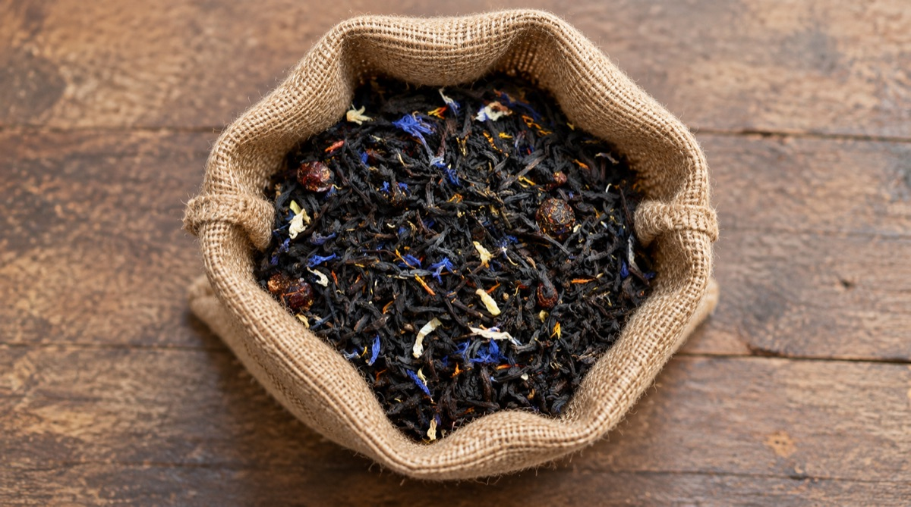
Qara çay · dolğun
Admiral
Qara çayın güclü əsasını mavi və açıq rəngli çiçək ləçəkləri, eləcə də giləmeyvə toxunuşları yumşaldır. Dəmləndikdə dərin kəhrəba rəngi, aydın qara çay xarakteri və zərif meyvə ətri verir. Səhər və günorta üçün balanslı, ifadəli seçimdir.
Dad notları
Qara çay, giləmeyvə, çiçək
Dəmləmə
95°C · 3–5 dəqiqə
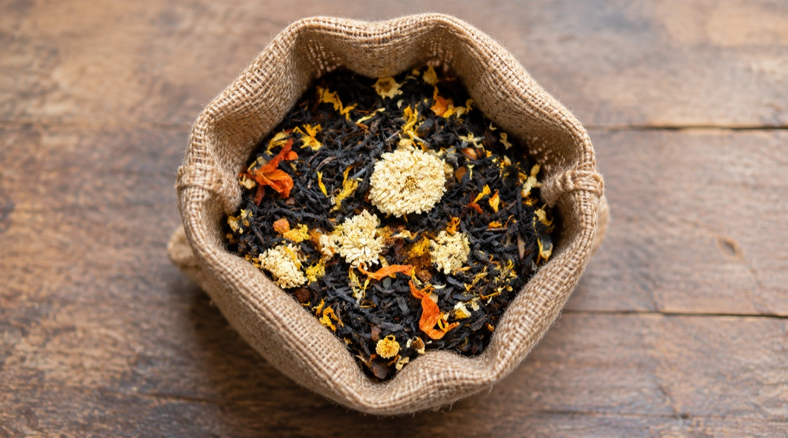
Qara çay · çiçəkli
Geyşa Qara
Qara çay yarpaqları iri ağ və narıncı çiçəklərlə tamamlanır. Dolğun çay gövdəsinin içində yumşaq balabənzər şirinlik və zərif çiçək ətri açılır. Nə həddindən artıq sərt, nə də çox yüngüldür; rahat içimli, tarazlı profili var.
Dad notları
Bal, çiçək ləçəyi, yüngül ədviyyə
Dəmləmə
95°C · 3–4 dəqiqə
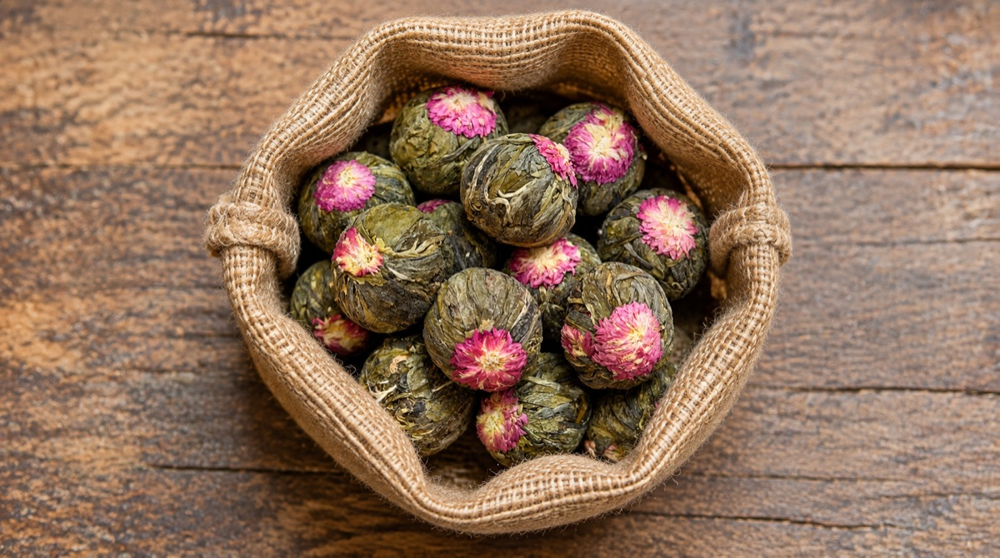
Yaşıl çay · əl ilə bağlanmış
Jasmin Çayı
İsti suda tədricən açılan yaşıl çay kürələri vizual dəmləmə ritualı yaradır. Yasəmənin təmiz çiçək ətri yaşıl çayın yüngül bitki tonları ilə birləşir. Aşağı temperaturda dəmləndikdə acılaşmadan yumşaq, təravətli və ipək kimi içim verir.
Dad notları
Yasəmən, təzə ot, ağ çiçək
Dəmləmə
80–85°C · 3–4 dəqiqə
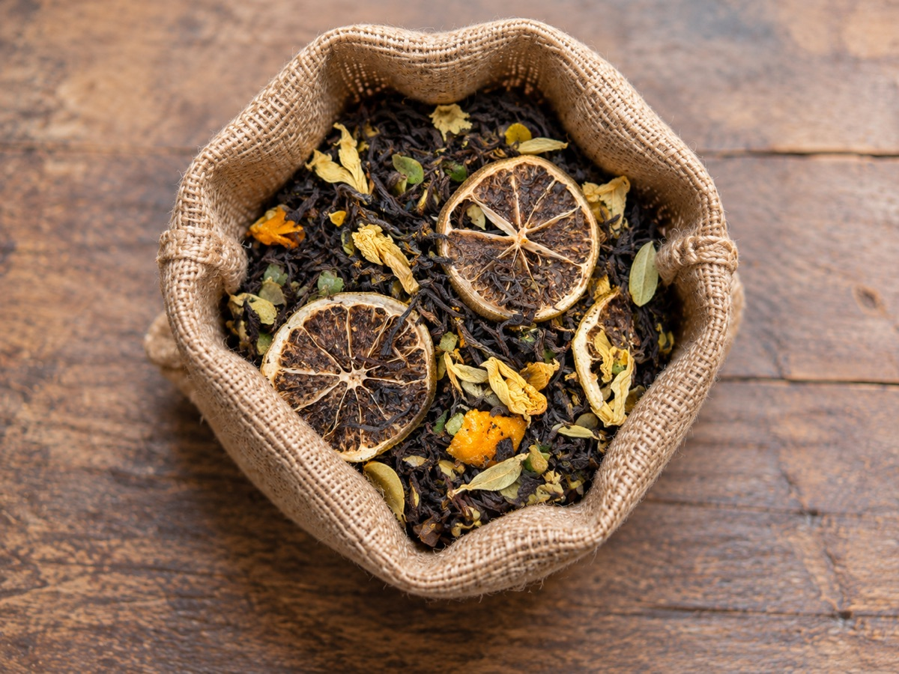
Qara çay · sitruslu
Limon Çayı
Qara çay, qurudulmuş limon dilimləri, sitrus qabığı və bitki ləçəklərinin canlı qarışığıdır. Parlaq limon ətri çayın dolğunluğunu yüngülləşdirir, sonda isə təmiz və azca turşməzə hiss buraxır. İsti olduğu kimi buzla da ifadəli qalır.
Dad notları
Limon qabığı, sitrus, qara çay
Dəmləmə
95°C · 3–4 dəqiqə
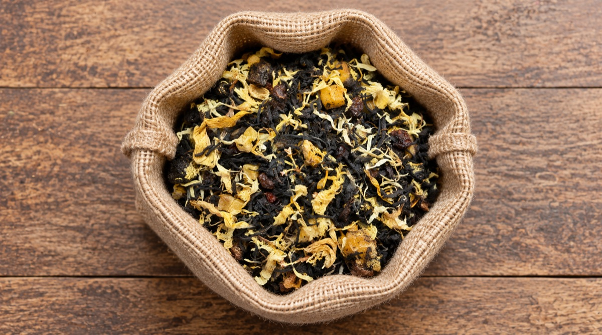
Aromatik qara çay · giləmeyvəli
Malina Şərbəti
Tünd çay yarpaqları, meyvə parçaları və açıq rəngli ləçəklərlə hazırlanmış ətirli qarışıqdır. Moruq xarakterli şirin-turş giləmeyvə dadı qara çayın dərinliyi ilə tarazlanır. Yumşaq şirinliyi və meyvəli bitişi desertlərlə yaxşı uyğunlaşır.
Dad notları
Moruq, qırmızı meyvə, yüngül karamel
Dəmləmə
95°C · 4 dəqiqə
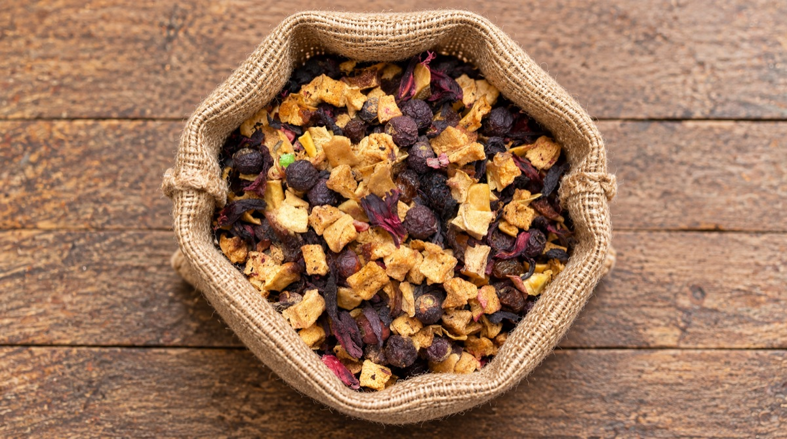
Meyvə infuziyası · şirin-turş
Meyvəli Çay
Qurudulmuş meyvələr, giləmeyvə və hibiskus tonlarının rəngli qarışığıdır. Çay yarpağından daha çox meyvə xarakteri önə çıxır: dolğun ətir, təbii turşuluq və kompotu xatırladan yumşaq şirinlik verir. Uzun dəmləmə dadı daha dərin edir.
Dad notları
Alma, giləmeyvə, hibiskus
Dəmləmə
95°C · 5–7 dəqiqə
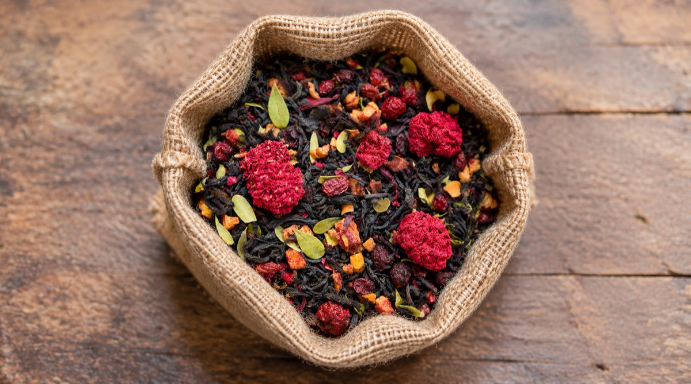
Qara çay · meyvəli
Nar Çayı
Qara çay yarpaqlarını qırmızı meyvə parçaları və çiçək elementləri tamamlayır. Narın tanış şirin-turş xarakteri dəmləməyə parlaq ətir və canlı bitiş verir. Dolğun, lakin ağır olmayan profili həm tək, həm də az miqdarda bal ilə içmək üçün uyğundur.
Dad notları
Nar, qırmızı giləmeyvə, çiçək
Dəmləmə
95°C · 4–5 dəqiqə
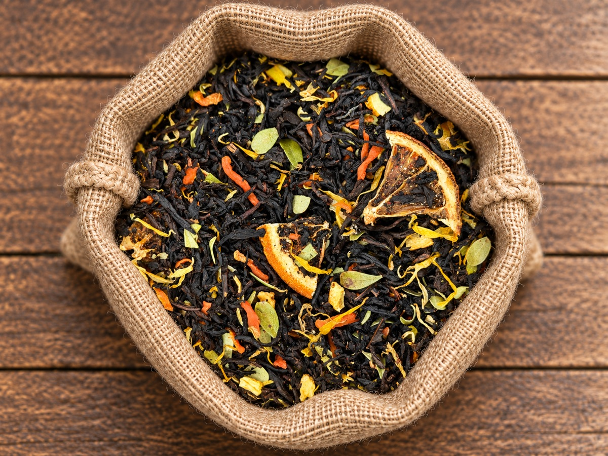
Qara çay · sitruslu
Portağal Çayı
Qara çayın dərin dadı qurudulmuş portağal dilimləri, qabıq və sarı ləçəklərlə canlanır. Əvvəlcə şirin sitrus ətri, sonra isə yüngül qabıq acılığı və isti çay gövdəsi hiss olunur. Xüsusilə sərin havada ətirli və rahat içimli seçimdir.
Dad notları
Portağal, sitrus qabığı, bal
Dəmləmə
95°C · 3–4 dəqiqə
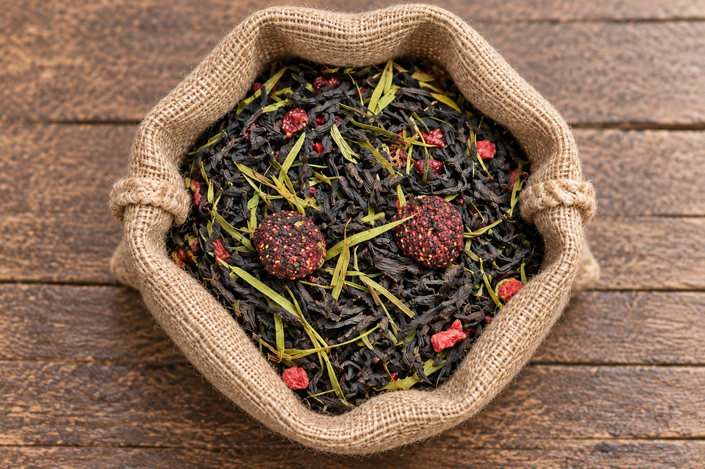
Qara çay · yay meyvəli
Qarpız Çayı
Qara çay bazası qırmızı meyvə parçaları və yaşıl bitki elementləri ilə tamamlanır. Qarpızı xatırladan sulu, şirin ətir tünd yarpaq dadını daha yüngül göstərir. İsti dəmləndikdən sonra soyudulub buzla servis edildikdə meyvə xarakteri daha aydın duyulur.
Dad notları
Qarpız, qırmızı meyvə, təzə bitki
Dəmləmə
95°C · 4 dəqiqə
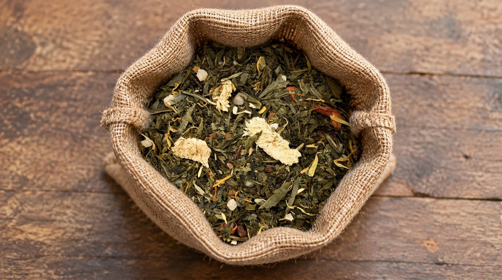
Yaşıl çay · çiçəkli
Geyşa Yaşıl
Yaşıl çay yarpaqları ağ və sarı çiçək ləçəkləri ilə tamamlanan zərif, ətirli qarışıqdır. Dəmləndikdə təzə bitki xarakteri, yumşaq çiçək ətri və yüngül təbii şirinlik açılır. Aşağı temperaturda hazırlandıqda təmiz, incə və acılaşmayan içim verir.
Dad notları
Ağ çiçək, təzə ot, yumşaq bal
Dəmləmə
80–85°C · 3 dəqiqə
Yaşıl çay · klassik
Yaşıl Çay
Təmiz yarpaq xarakterini ön plana çıxaran gündəlik yaşıl çaydır. Yumşaq bitki ətri, yüngül mineral hiss və təravətli bitiş verir. Qaynar olmayan su ilə qısa dəmləndikdə yarpağın təbii şirinliyi qorunur və sərtlik yaranmır.
Dad notları
Təzə ot, yaşıl yarpaq, yüngül şirinlik
Dəmləmə
75–80°C · 2–3 dəqiqə
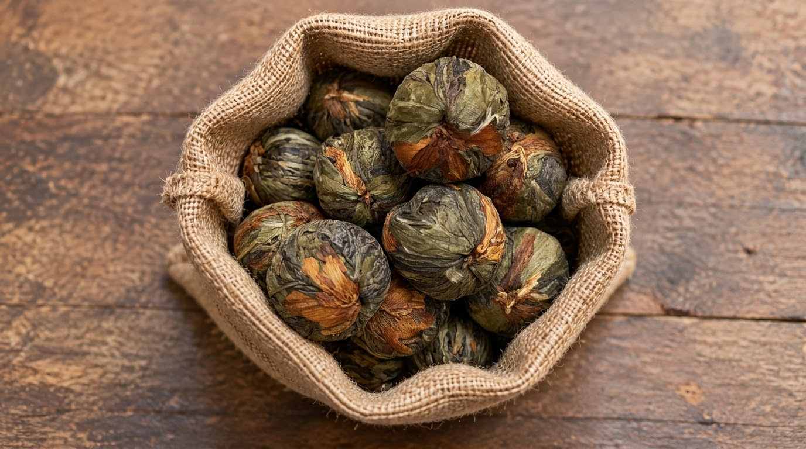
Bağlanmış yaşıl çay · meyvəli
Mango Kürəsi
Əl ilə bağlanmış çay kürəsi isti suda tədricən açılaraq həm vizual, həm də ətirli dəmləmə təcrübəsi yaradır. Yaşıl çayın yumşaq bitki tonları tropik meyvəni xatırladan şirin ətirlə birləşir. Şüşə dəmlikdə servis üçün xüsusilə uyğundur.
Dad notları
Mango, tropik meyvə, yumşaq çiçək
Dəmləmə
80–85°C · 4–5 dəqiqə
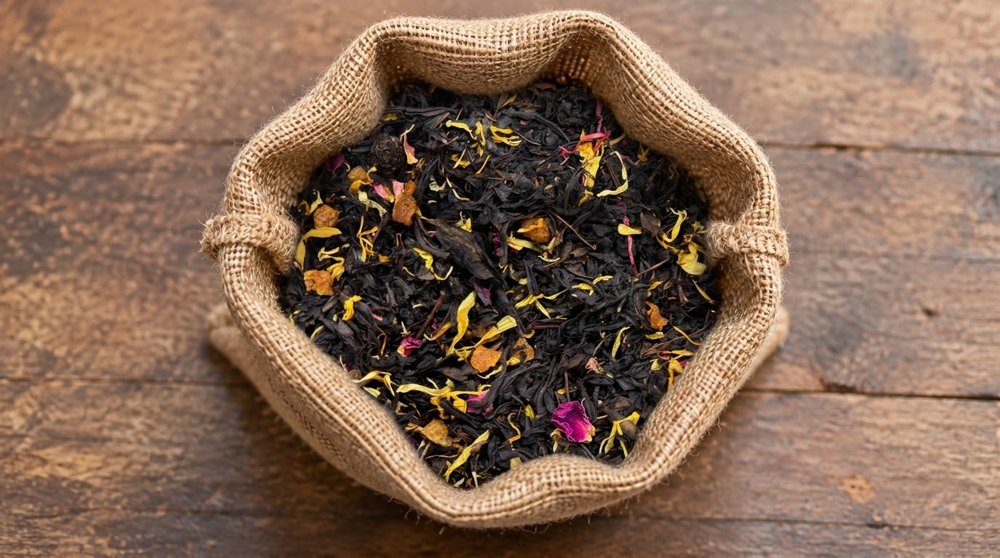
Qara çay · tropik meyvəli
Mango Çayı
Qara çay yarpaqları meyvə parçaları və rəngli ləçəklərlə zənginləşdirilmiş aromatik qarışıqdır. Manqonu xatırladan şirin, yetişmiş meyvə ətri qara çayın dolğun gövdəsini yumşaldır. İsti servisə də, soyudulub buzla içilməyə də uyğundur.
Dad notları
Mango, yetişmiş meyvə, çiçək ləçəyi
Dəmləmə
95°C · 3–4 dəqiqə
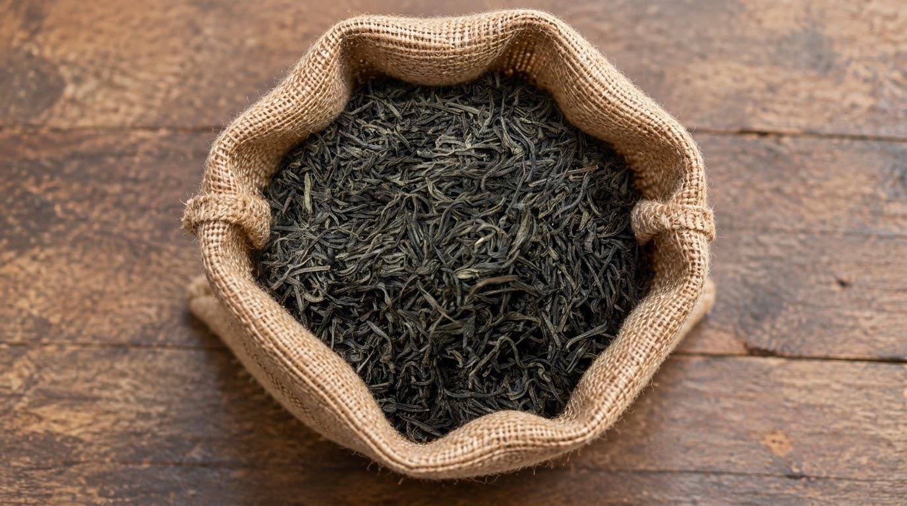
Qara çay · klassik
Qara Çay
Saf yarpaq xarakterli, dolğun və aydın dəmlənən klassik qara çaydır. Kəhrəba rəngi, isti malt çalarları və uzun, təmiz bitişi ilə səhər süfrəsi və gündəlik çay fasilələri üçün rahat seçimdir. İstəyə görə limon və ya az miqdarda südlə servis edilə bilər.
Dad notları
Malt, tünd bal, quru ağac
Dəmləmə
95°C · 3–5 dəqiqə
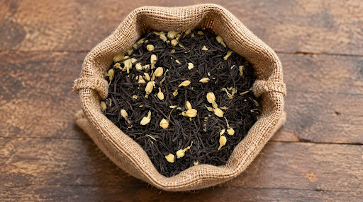
Qara çay · jasminli
Jasminli Qara Çay
Tünd çay yarpaqları jasmin çiçəklərinin parlaq, təmiz ətri ilə birləşir. Qara çayın dolğunluğu çiçəkli aromanı daşıyır, jasmin isə bitişə zəriflik və təravət əlavə edir. Klassik qara çaydan daha ətirli, yaşıl jasmin çayından isə daha gövdəlidir.
Dad notları
Jasmin, qara çay, ağ çiçək
Dəmləmə
90–95°C · 3 dəqiqə
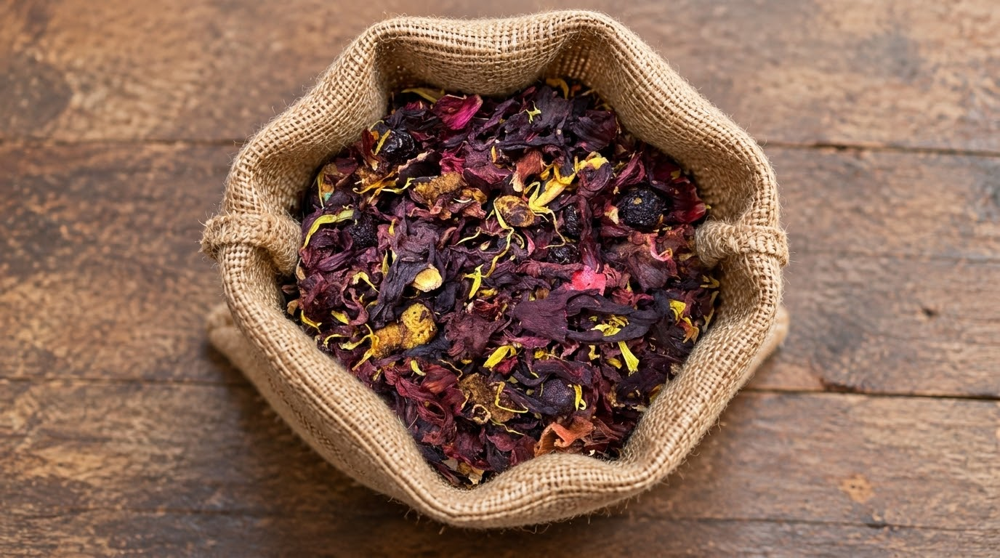
Bitki infuziyası · turşməzə
Hibiskus
Hibiskus ləçəkləri və meyvə parçalarından ibarət kofeinsiz, canlı rəngli infuziyadır. Parlaq turşuluq, qırmızı meyvə xarakteri və təmiz bitiş verir. İsti içildikdə dolğun və rahat, buzla servis edildikdə isə xüsusilə təravətli olur.